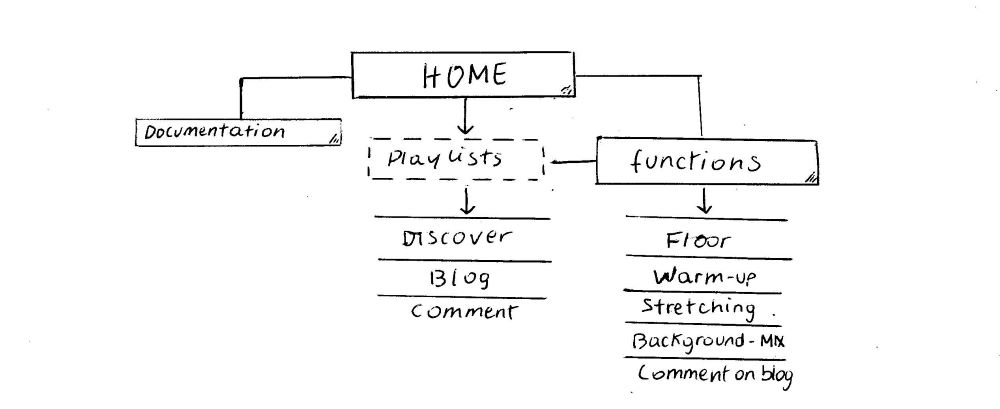
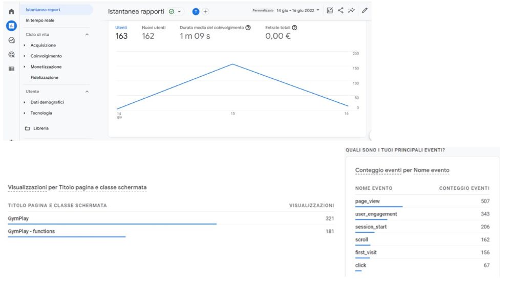

ABSTRACT
Gym Play Music è un sito realizzato per allenatori/allenatrici e ginnasti/e di ogni disciplina del mondo della ginnastica (artistica, ritmica, aerobica, acrobatica), ma anche per chiunque cerchi una piattaforma in cui trovare ispirazione su musiche da utilizzare durante l’allenamento sportivo.
L’obiettivo è quello di semplificare la ricerca di playlists adatte ad ogni momento dell’allenamento e a qualsiasi tipo di gruppo di atleti. Una sezione specifica è in più dedicata in particolare agli atleti/e a trovare ispirazione per basi musicali da utilizzare nei loro esercizi per le competizioni.
I suggerimenti si basano su materiali musicali presenti su Spotify, uno dei supporti più utilizzati in questo momento per la fruizione di musica di ogni genere.
Questo strumento, inoltre, investe nel coinvolgimento degli utenti attraverso il blog e l’incentivo a condividere brani o playlist personali per creare una community attraverso la quale il sito rimanga sempre attivo e aggiornato di contenuti inediti!
PROJECT MANAGMENT PLAN
Benchmarking
Obiettivi
L’obiettivo di questo sito è quello di proporre una raccolta sempre aggiornata che selezioni contenuti musicali specifici organizzati in cartelle secondo il tipo di utilizzo (riscaldamento, stretching, musiche per esercizi di gara). I brani saranno pronti per essere salvati e utilizzati direttamente attraverso il proprio account Spotify, evitando di inoltrarsi in lunghe ricerche del giusto sottofondo musicale a inizio dell’allenamento.
Essendo la musica componente fondamentale nelle discipline della ginnastica, questo sito vuole principalmente correre in soccorso ad allenatori e allenatrici presi dal continuo ricambio tra un gruppo di atleti e l’altro. Il sito gli darà la possibilità di scegliere la musica che dia la giusta motivazione ai propri atleti.
Target
Il target primario riguarda dunque allenatori e atleti delle discipline ginniche, ma anche chiunque facendo qualsiasi sport o allenamento individuale, voglia sfruttare le categorie di playlists specifiche per un riscaldamento, workout e stretching strutturati a ritmo di musica.
Competitors
Per quanto riguarda l’analisi dei competitors, tenendo in considerazione i siti web inerenti al tema della musica associato alle discipline della ginnastica, non ho incontrato un sito che fornisce la stessa tipologia di funzionalità di GymPlay Music. L’idea di questa piattaforma è infatti nata proprio per la necessità di utilizzo personale, dal confronto con altre persone che impegnate nel settore.
Tuttavia, esistono siti web inerenti all’argomento della musica nell’ambito della ginnastica, che si occupano però più nello specifico alla creazione di basi musicali per gli esercizi al corpo libero di ginnastica.
Considerandoli come potenziali competitors per quanto concerne la sezione di GymPlay music dedicata ai suggerimenti per basi musicali da competizione, ne fornisco qui una breve analisi:
(tutti siti con e-commerce integrato per creare il proprio brano personalizzato e acquistarlo in versione digitale già editato, per l’utilizzo negli esercizi di corpo libero)
https://floorexpressmusic.com/,
https://www.floortracks.net/,
http://www.energymmusic.com/catalog/all/351
PRO:
- permettono una ricerca mirata dei brani per genere musicale
- consentono di inserire istruzioni per editare la propria base musicale (stile, strumenti musicali predominanti, velocità di riproduzione, lunghezza della traccia)
- il team comprende esperti in postproduzione in ambito musicale
CONTRO:
- presentano grafiche vecchie e non aggiornate
- basati su formati di file musicali ormai poco utilizzati o addirittura ormai obsoleti come CD
https://gymnasticstracks.com/ e
https://www.jumptwistmusic.com/
PRO: sono entrambi molto facili da navigare e contengono molte funzionalità utili e ben strutturate.
CONTRO: si limitano a proposte di basi per accompagnare coreografie da competizione.
Struttura e Layout
Architettura del sito

Wireframe
Linguaggi e strumenti
Linguaggi
Strumenti
- UIDEK è da dove è stato ricavato il template bootstrap da cui ha preso spunto GymPlay Music
- W3SCHOOLS, HTML e BOOTSTRAP sono i siti che hanno supportato la progettazione
- FONT AWESOME è il toolkit utilizzato per le icone del sito (insieme a Flaticon)
- GOOGLE FONTS è il sito utilizzato per i font
- FREEPIK e Pexels sono i siti utilizzati per la raccolta immagini
- ADOBE COLOR è stato utilizzato per le combinazioni di colori
- GITHUB è il servizio di hosting per la pubblicazione on-line di GymPlay music
- GOOGLE ANALYTICS per monitorare i risultati finali della diffusione di GymPlay music
Look and Feel
GymPlay Music è una piattaforma rivolta a ginnaste/i e i colori scelti vogliono richiamare all’eleganza e pulizia nei movimenti di questo sport. Per questo i colori predominanti sono composti dal nero che sfuma gradualmente in un verde petrolio terminando in un celeste (#25ddf5) che da luce all’angolo destro della pagina. Questa composizione vuole richiamare le sfumature dei nastri colorati delle ginnaste della ritmica e i body da esibizione ricchi di gradazioni di colori e brillanti. Mentre il contrasto bianco e nero contribuisce a conferire l’aspetto dell’eleganza e perfezione che caratterizza gli atleti/e che praticano la ginnastica e le loro performance.
Un tocco di verde (#3ecf8e) in alcuni punti strategici trasmette la giusta energia necessaria per praticare queste discipline ginniche.
Riguardo al contrasto sfondo e scritte ho deciso di mantenere i colori alternando al fondo bianco scritte scure o sezioni colorate contenenti scritte bianche.
I fonts utilizzati sono YESEVA ONE e MERRIWEATHER SANS. Il primo per i titoli offre caratteristiche più incisive e adatte a far risaltare le tematiche principali, introducendo le sezioni del sito. Il secondo, invece, fa parte di una famiglia di caratteri di testo sans-serif semi condensati a basso contrasto progettata per essere piacevole da leggere a dimensioni anche molto ridotte (utile alla fruizione del sito da schermi piccoli tipo mobile).
All'interno del sito sono stati aggiunti elementi che portano a semplificare la navigazione dell’utente come pulsanti per raggiungere le varie sezioni in cui si suddivide la pagina e far muovere l'utente il più facilmente possibile agevolandolo all'azione in maniera intuitiva.
L’utilizzo della retroilluminazione dei bottoni al passaggio del mouse consente di capire in maniera intuitiva dove si incontrano elementi cliccabili, attraverso i quali accedere ad altri contenuti. Per un’esplorazione in maniera semplice e immediata il menù di navigazione è progettato per rimandare a tutte le funzioni principali in cui sono organizzati i contenuti del sito.
Communication Strategy
Background
GymPlay Music sceglie di creare una piattaforma che punta sulla differenziazione di tipologie di musica in base al momento in cui l’atleta le fruisce (riscaldamento, stretching, workout, ecc.), rispetto ai competitors che mirano a specializzarsi nella vendita di brani personalizzati e adattati a una sola precisa di queste funzioni.
Il progetto si inserisce nel panorama dei competitors offrendo un sito che valorizza la musica, non solo nell’ambito della competizione, ma anche quella che anima le varie fasi dei lunghi allenamenti per prepararsi ad affrontarla.
Inoltre, vari di questi siti presentano grafiche piene di contenuti ma disorientanti perché vengono organizzati in maniera anche troppo articolata, spesso non sono chiaramente individuabili le sezioni dove procedere alla ricerca del brano rispetto a quella dove avviare il percorso di editing e successivo acquisto.
GymPlay Music si prefigge di essere il più chiaro ed intuitivo possibile nell’ organizzazione dei contenuti separando l’archivio per la ricerca di playlist in una pagina secondaria, rispetto alla home dedicata alla community dove trovare le novità musicali pubblicate e gli articoli condivisi nel blog dagli utenti.
Obiettivi comunicativi
Il progetto si prefigge attraverso il sito web di diventare per l’utente il luogo di riferimento attraverso cui accedere in maniera più diretta a una tipologia specifica di contenuti già presenti su Spotify (piattaforma su cui si appoggia per l’utilizzo di brani). GymPlay Music farà da vetrina a nuove raccolte di brani create dagli utenti, utilizzando i propri accounts dove ascoltano normalmente musica e conterrà altri interessanti spunti sul ruolo della musica nell’allenamento con articoli attinenti pubblicati sul blog.
Target Audience e Messaggio
Il sito si rivolge principalmente a tutti gli atleti/e, allenatori/trici delle 4 discipline della ginnastica e persone che comunque lavorano nell’ambito dell’allenamento sportivo.
Questi gruppi di interesse possono essere raggiunti attraverso la promozione sui social media e advertising online con annunci nei siti ufficiali della Federazione della Ginnastica. Questo accompagnato a una targhettizzazione ben precisa per parole chiave o usando i database raccolti tramite i messaggi condivisi e link nel blog.
Il messaggio che si vuole trasmettere è quello di essere una piattaforma che corre in aiuto ad allenatori/trici che tra un gruppo e l’altro da allenare non hanno il tempo di selezionare all’intero dell’archivio Spotify la playlist giusta per ogni momento, ma ci tengono a motivare i propri atleti con il giusto ritmo che accompagni tutti i tipi di movimento. Insieme a questo, vuole essere anche uno spazio per togliersi curiosità e approfondire l’argomento della musica applicato alla formazione dell’atleta.
Promozione
È possibile raggiungere persone interessate all’utilizzo della piattaforma grazie al passaparola nelle società sportive della ginnastica e attraverso i loro social media dedicati che offrono targhettizzazione ben mirata creando contatti con utenti e pagine che riguardano queste discipline. La campagna sui motori di ricerca vuole attirare la curiosità dell’utente inserendosi tra i siti di informazione autoriale nell’ambito delle discipline ginniche.
Infine, sarà previsto un lancio della piattaforma attraverso la distribuzione di volantini illustrativi del progetto e contenenti link e QR code che rimandano alla pagina web, che verranno distribuiti presso le società sportive del territorio per l’avvio alla diffusione raggiungendo, anche offline, potenziali futuri utenti. La campagna continuerà poi esclusivamente online.
Valutazione dei risultati
Gli obiettivi sono stati raggiunti e il messaggio colto in quanto, controllando i report di Google Analytics, user engagement e visualizzazione delle pagine sono molto alte. Anche la durata media di permanenza (superiore a 1 minuto) e le visualizzazioni alla pagina secondaria dimostrano che gli utenti sono stati incuriositi da cliccare e scoprire i contenuti più approfonditamente andando oltre il semplice scroll della homepage.
